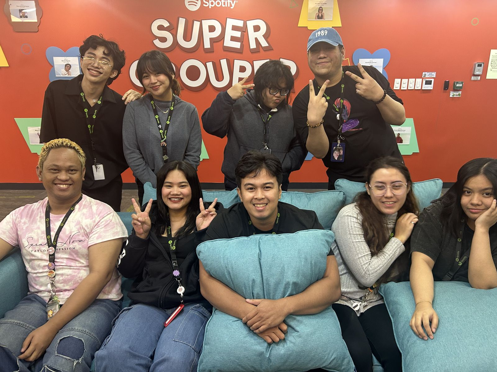
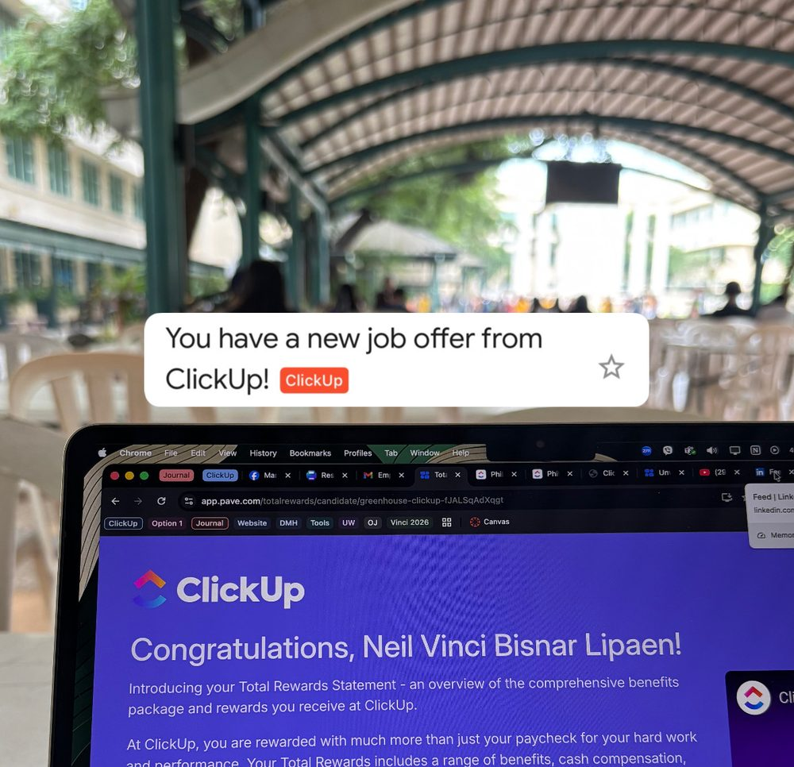

It started with a Psychology degree at Far Eastern University, in Industry & Organizations: people, behaviour, and how organizations actually work.
I didn't build my career one thing at a time.
I built it all at once.
I never got to just study. I worked full-time the whole way through.

Two and a half years on the Spotify project through Sutherland. Frontline customer experience first, then the processes, systems, and people behind it.

The ClickUp offer landed on one of my lowest days on campus: burnt out, and going back and forth with two legal teams over my internship documents.
Then B2B SaaS. At ClickUp the work moved to accounts, commercial context, and cross-functional coordination. I kept going to class.
My degree required an HR internship. I did it on-site at Sutherland, on recruitment and talent work, while still working full-time graveyard shifts and carrying a full academic load.